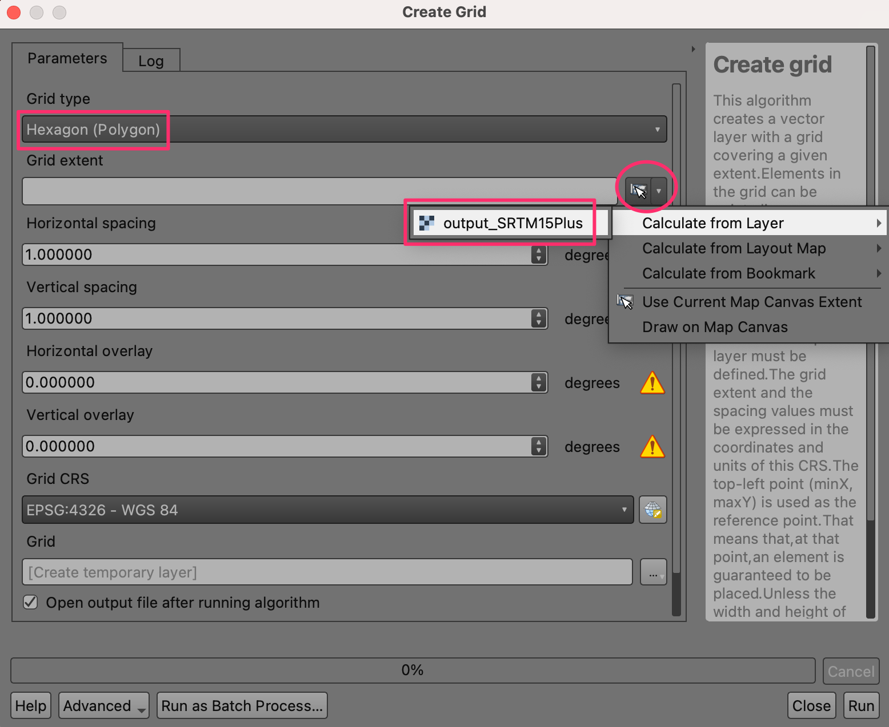
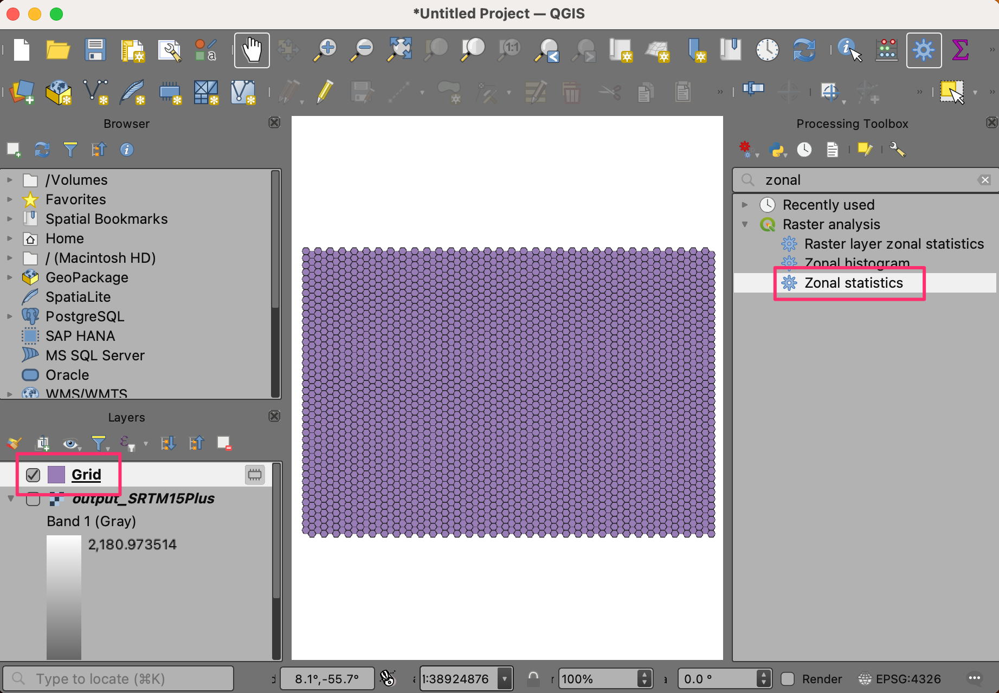
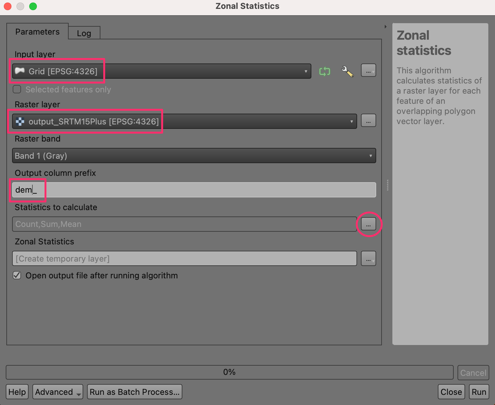
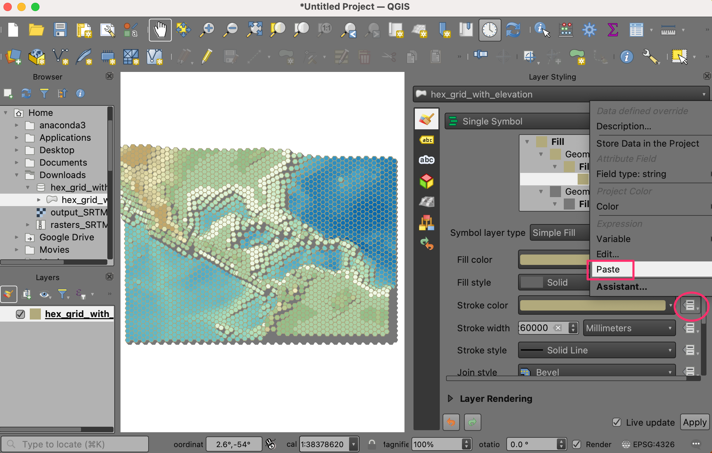

Ujaval Gandhi
Ujaval GandhiKreiranje mape sveta u bloku (QGIS3)¶
Doprinos: Stiven Kim <https://geographyclub.github.io/>`_
U prethodnom tutorijalu Osnovno filtriranje i stilizovanje pomoću izraza (QGIS3) smo pogledali kako se jednostavni izrazi mogu koristiti za filtriranje i stilizovanje podataka u QGIS-u. Proširili smo ovo kreiranjem sveta u blok formatu od heksadecimalne mreže sa vrednostima visine.
Pregled zadatka¶
Uzećemo heksadecimalnu mrežu koja sadrži vrednosti visine i koristiti matematičku funkciju da postavimo promenljivu visine za 2.5d renderer i uslovnu naredbu da primenimo skalu boja.

Druge veštine koje ćete naučiti¶
Otkrivanje i preuzimanje skupova podataka o nadmorskoj visini.
Kreiranje heksagonalne mreže i izdvajanje rasterske statistike za svaku ćeliju mreže.
Dodavanje nove rampe boja u QGIS.
Dobijte podatke¶
OpenTopography pruža pristup mnogim otvoreno licenciranim skupovima podataka o elevaciji. Izdvojićemo i preuzeti DEM za vaš region od interesa iz globalnog DEM-a i skupa podataka batimetrije okeana koji se nalazi na OpenTopography.
Posetite stranicu sa podacima „Globalna batimetrija i topografija na 15 lučnih sekundi: SRTM15+ V2.5.5 <https://portal.opentopography.org/raster?opentopoID=OTSRTM.122019.4326.1>“_ na veb-sajtu OpenTopography. Ovo je globalni skup podataka rezolucije 500 metara izveden iz SRTM DEM-a i različitih skupova podataka okeanske batimetrije.

Pomerite se nadole do odeljka 1. Izaberite oblast podataka za obradu. Kliknite na dugme IZABERI REGION i nacrtajte pravougaonik koji pokriva region koji vas zanima.

Kada podesite region, skrolujte nadole do odeljka 2. Formati izlaznih podataka i izaberite
GeoTiff. Ostavite sve ostale opcije na podrazumevanim vrednostima i skrolujte nadole do odeljka Opis posla. Unesite svoju adresu e-pošte da biste bili obavešteni kada preuzimanje bude spremno. Kliknite na dugme POŠALJI.

Obrada preuzimanja može potrajati nekoliko minuta. Kada bude spremno, dobićete vezu za preuzimanje izabranog podskupa. Preuzmite datoteku na svoj računar. Preuzeta datoteka je tar kompresovana datoteka koju je potrebno raspakovati da bi se otvorila u QGIS-u. Na Windows-u možete koristiti eksterni program kao što je 7-Zip da biste raspakovali i izdvojili datoteku
output_SRTM15Plus.tif.

U QGIS-u, pronađite datoteku
output_SRTM15Plus.tifu Pregledaču. Prevucite je i ispustite na QGIS platno. Novi slojoutput_SRTM15Plusbiće dodat na Slojevi panel.
Otvorite Kutiju sa alatkama za obradu iz . Potražite i pronađite algoritam . Dvaput kliknite da biste ga otvorili.

U dijalogu Kreiraj mrežu, izaberite
Heksagonkao Tip mreže. Napravićemo mrežu koja obuhvata ceo DEM. Dakle, za Opseg mreže, kliknite na strelicu nadole i izaberite .

Naša izabrana regija je prilično velika, tako da možemo da kreiramo mrežu od 1 stepena. Izaberite
1i za Horizontalni razmak i za Vertikalni razmak. Ako radite u manjoj regiji, možete da izaberete manji razmak mreže. Ostavite ostale opcije na njihovim podrazumevanim vrednostima i kliknite na dugme Pokreni da biste kreirali mrežu.

Novi sloj „Mreža“ biće dodat na panel Slojevi. Sada ćemo izdvojiti minimalne, maksimalne i prosečne vrednosti nadmorske visine u svakom poligonu mreže. Izaberite sloj „Mreža“ i pronađite algoritam iz kutije sa alatkama za obradu. Dvaput kliknite da biste ga otvorili.

Izaberite
Gridkao Input layer ioutput_SRTM15Pluskao Raster layer. Unesitedem_kao Output column prefix. Zatim želimo da konfigurišemo koje statistike želimo da izvučemo iz rastera. Kliknite na dugme … pored Statistika za izračunavanje.

Označite opcije za vrednosti „Prosečna vrednost“, „Maksimalna vrednost“ i „Minimalna vrednost“ i kliknite na U redu. Rezultate ćemo sačuvati u datoteku. Kliknite na dugme … pored Zonalna statistika i izaberite Sačuvaj u datoteku….

Idite do fascikle na računaru i unesite ime datoteke kao
hex_grid_with_elevation. Uverite se da je tip datoteke izabran kao GeoPackage files (*.gpkg). Kliknite na Sačuvaj. Kada je dijalog Zonalna statistika konfigurisan, kliknite na Pokreni.

Obrada može potrajati nekoliko minuta u zavisnosti od veličine vaše mreže. Kada se proračuni završe, novi sloj
hex_grid_with_elevationbiće dodat na panel Layers. Ovo je vektorski sloj sa atributimadem_mean,dem_minidem_maxkoji sadrži statistiku nadmorske visine izvučenu iz DEM-a.

Radi lakšeg snalaženja, možete direktno preuzeti kopiju pripremljene mreže odozdo:
Izvor podataka [OPENTOPOGRAPHY]
Procedura¶
Pronađite datoteku
hex_grid_with_elevation.gpkgu QGIS pregledaču i proširite je. Izaberite slojhex_grid_with_elevationi prevucite ga na platno.

Novi sloj
hex_grid_with_elevationće sada biti učitan u QGIS i trebalo bi da vidite heksadecimalnu mrežu.

Pre nego što nastavimo, prvo moramo dodati skalu boja pogodnu za bojenje DEM-ova. Kliknite na Podešavanja u meniju i izaberite Menadžer stilova.

Kliknite na znak plus Dodaj stavku na dnu i izaberite .

Pomerite se nadole po skalama boja dok ne pronađete wiki-1.02. Možda ih postoji nekoliko sa istim imenom, samo kliknite na jednu i kliknite na OK.
U prozoru Sačuvaj novu kolornu rampu, unesite vrednost
wiki-1.02kao Naziv.

Kliknite na Sačuvaj da biste zatvorili prozor, a zatim kliknite na Zatvori da biste zatvorili Menadžer stilova. Sada je wiki-1.02 skala boja dostupna za korišćenje u vašim budućim projektima.

Kliknite na Otvori panel za stilizovanje slojeva i prebacite se sa Jedan simbol na 2.5 D. Kliknite na dugme e pored Visina.

U Kreator izraza, unesite sledeći izraz. Ovaj izraz koristi funkciju
scale_exp()da bi promenio opseg vrednosti atributadem_meanod 0-10000 do 0-4 i da bi koristio eksponent od 2. Eksponencijalno skaliranje izgleda lepo u blok svetu.+8000služi da bi dno okeana bilo jednako nuli.
scale_exp(("dem_mean"+8000),0,10000,0,4,2)
Promenite Ugao na
135.

Primenićemo sopstvene boje na mreže. Isključite Senči zidove na osnovu aspekta i Senka.

Trebalo bi da vidite kako topografija regiona počinje da dobija oblik. Kliknite na Otvori panel za stilizovanje sloja i prebacite se sa 2.5D nazad na Jedan simbol.

U prozoru Symbol, primetite da postoje dva generatora geometrije, svaki sa tipom sloja Simple Fill. Prvi Simple Fill je gornja strana svakog bloka, dok je drugi Simple Fill bočna strana.

Kliknite na prvo Simple Fill da biste promenili boju gornje površine. Kliknite na dugme Data define override za Fill color i izaberite Edit… u meniju.

Ovim se otvara dijalog Kreator izraza za boju popunjavanja. Unesite sledeći izraz. Ovaj izraz ima uslovnu naredbu
CASEza korišćenje boja wiki-1.02 kada je vrednost atributadem_meanveća ili jednaka nuli i zeleno-plavih boja kada jedem_meanmanja od nule.
CASE WHEN "dem_mean" >= 0 THEN ramp_color('wiki-1.02',scale_linear("dem_min",0,1500,0.4,1)) ELSE ramp_color('GnBu',scale_linear("dem_mean",-6000,0,1,0)) END
Heksadecimalna mreža se sada prikazuje u bojama koje određuje naš izraz. Kliknite na dugme Data define override za Fill color i izaberite Copy u meniju.
Kliknite na dugme Data define override za Stroke colour i izaberite Paste u meniju.

Trebalo bi da vidite kako boje stupaju na snagu i da je naša mapa završena. Slobodno eksperimentišite sa izrazima u ovom tutorijalu, kao što je promena parametara u funkciji visine ili dodavanje i isprobavanje novih prelaza boja.

If you want to give feedback or share your experience with this tutorial, please comment below. (requires GitHub account)